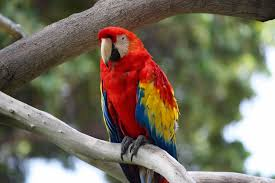

HI WEB APP
Parrots (Psittaciformes), also known as psittacines (/ˈsɪtəsaɪnz/),[1][2] are birds with a strong curved beak, upright stance, and clawed feet.[a] They are classified in four families that contain roughly 410 species in 101 genera, found mostly in tropical and subtropical regions.

The four families are the Psittaculidae (Old World parrots), Psittacidae (African and New World parrots), Cacatuoidea (cockatoos), and Strigopidae (New Zealand parrots). One-third of all parrot species are threatened by extinction, with a higher aggregate extinction risk (IUCN Red List Index) than any other comparable bird group.[3] Parrots have a generally pantropical distribution with several species inhabiting temperate regions as well. The greatest diversity of parrots is in South America[4] and Australasia.[5]